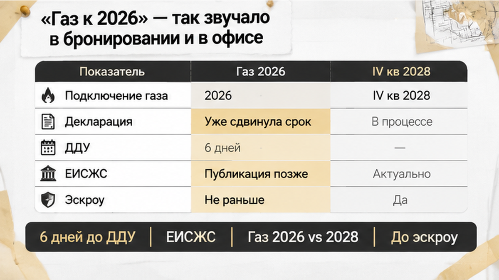
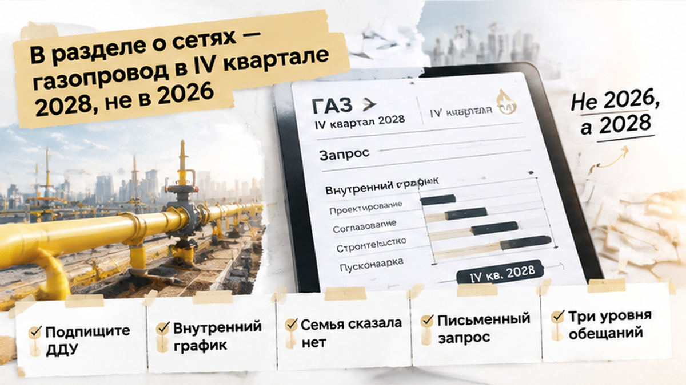
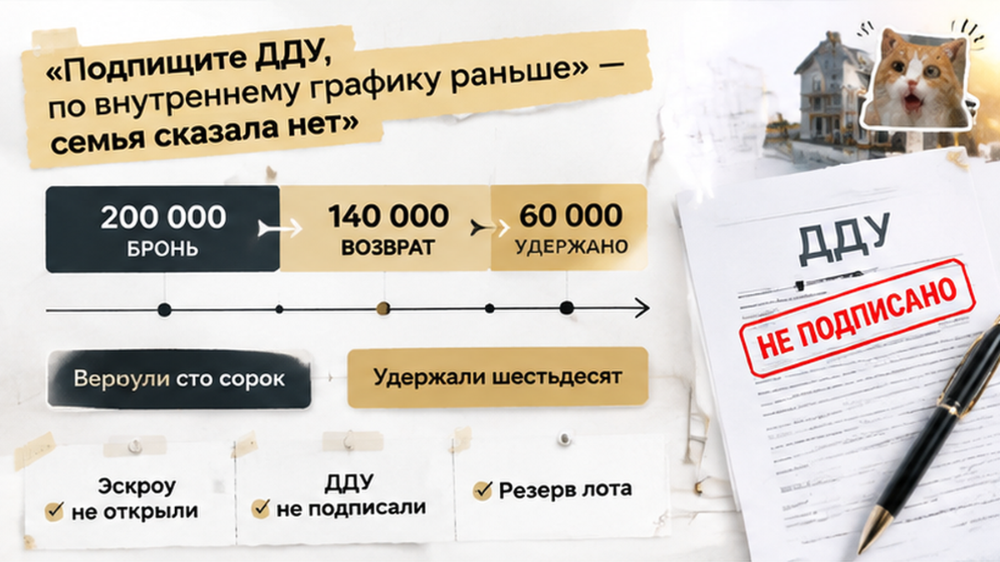
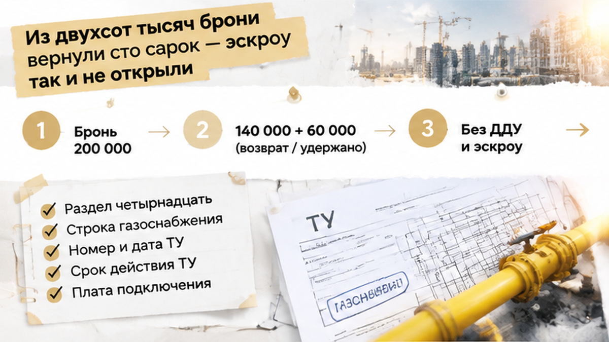
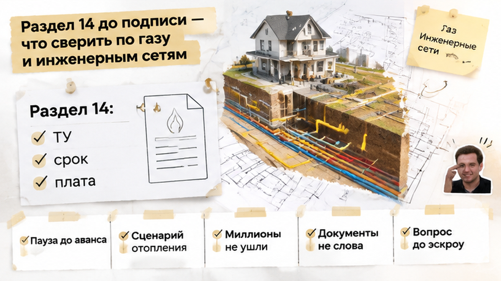

Семья с двумя детьми внесла 200 000 ₽ за бронирование готового дома в строящемся коттеджном посёлке под Тюменью, но до покупки не дошла и потеряла 60 000 ₽. Газ, на который рассчитывали при переезде, в документах оказался совсем не на том горизонте, что в обещаниях офиса продаж. Дом готов — казалось бы, остаётся оформить сделку и планировать жизнь за городом. Только готовый дом и готовое отопление от газа — не одно и то же. Расскажу изнутри этой развилки: что проверить, пока за вами ещё выбор, а не подписанный ДДУ.
Я Святослав Шакин, The Риэлтор, Тюмень. Выбираете дом или новостройку — напишите в Telegram или MAX. Подключусь до аванса: сначала разберём документы, потом будем решать, за что платить.
Семья искала не дачу на выходные. Планировала постоянный переезд с двумя детьми. Поэтому газ был не приятным дополнением к участку, а частью расчёта: как отапливать дом, сколько тратить и когда можно обустраиваться.
«Газ к 2026». Этот ориентир фигурировал в бронировании и звучал на встречах с представителем застройщика. Покупатели на него и рассчитывали.
Обычный покупатель слышит: «К переезду вопрос решится». Профи уточняет: «Что именно будет готово, кто за это отвечает и где закреплён срок?» Не потому, что любит портить впечатление от дома. Потому, что за коротким словом «газ» скрывается несколько разных работ.
Есть региональная программа газификации. Есть технические условия. Есть внутрипоселковые сети и подключение конкретного дома. Одно звено не подтверждает готовность всей цепочки. Даже действующие ТУ сами по себе не говорят, когда в доме появится газ.
Для малоэтажного комплекса, который продают по ДДУ, проектная декларация — не приложение к красивой презентации. Это документ по 214-ФЗ, опубликованный в ЕИСЖС. В нём нужно смотреть сведения о сетях, этапах строительства и сроках, а затем сопоставлять их с договором.
Слова менеджера помогают понять предложение. Но проверку предложения они не заменяют. Так же разбирал расхождение между обещанием собственности и арендой земли в декларации: важно не выиграть спор в офисе, а выяснить условия до подписи.

До назначенного подписания оставалось шесть дней. Вечером семья самостоятельно открыла актуальную проектную декларацию в ЕИСЖС на dom.rf. Не пересказ менеджера, не рекламный буклет — сведения по своему объекту.
Это важный момент. Бронь уже оплачена, встреча намечена, мысленно можно расставлять мебель. Остановиться и читать документы в такой точке сложнее, чем кажется: хочется закончить выбор, а не начинать проверку заново.
Покупатели дошли до раздела об инженерных сетях. Именно там нужно искать газоснабжение отдельно, а не выводить его готовность из даты передачи дома. У дома может быть один график, у газопровода — другой.
Я в такой проверке смотрю не только на наличие слова «газ». Кто выдал технические условия? Каковы их номер, дата и срок действия? Что указано о плате за подключение? И главное — к какому объекту и этапу относятся эти сведения?
Актуальную редакцию стоит сохранить в PDF вместе с датой версии. Рядом — условия бронирования, рекламу и переписку с обещаниями. Декларация обновляется, поэтому на переговорах лучше сравнивать документы, а не воспоминания: «Вы вроде говорили» — «Вы не так поняли».
У семьи проверка случилась до подписания ДДУ и открытия эскроу. В разделе о сетях обнаружилось расхождение, которое меняло расчёт переезда. Теперь требовалось не ещё одно успокаивающее объяснение, а документальный ответ.
На бумаге расхождение уже было видно. Теперь вопрос не в том, какую дату красивее произнесли в офисе. Вопрос в другом: как семье жить в доме до появления газа и на какие расходы рассчитывать.
С двумя детьми временное отопление — не деталь, которую удобно оставить на потом. Оно меняет бюджет и сам план переезда. Готовый дом ещё не означает, что вся инфраструктура для привычной жизни тоже готова.
Обычный покупатель слышит: «Технические условия есть». И выдыхает: значит, газ будет. Профи открывает документ: кто выдал ТУ, на что именно, когда и до какого срока они действуют? Срок действия технических условий — не дата подключения дома.
В декларации по форме Минстроя № 239/пр раскрывают вид сети, организацию, выдавшую ТУ, номер и дату документа, срок действия, плату за подключение. Газоснабжение нужно искать отдельно, а не достраивать в голове по соседним строкам про воду и электричество.
И ещё — разделять этапы. Внешний газопровод, внутрипоселковая сеть и подключение конкретного дома не становятся одним обязательством только потому, что в презентации написано «газ». Региональная программа газификации тоже не заменяет документы по вашему объекту.
В одной тюменской декларации были указаны вода, водоотведение и электричество, а газоснабжения в той редакции не было. Это не приговор покупке. Но повод спросить: «На основании какого документа вы обещаете газ и что именно берёте на себя?»
Тот же принцип разбирал в истории, где обещание о земле расходилось с проектной декларацией. Проверяем не убедительность менеджера. Проверяем, чем подтверждены его слова.

На расхождение представитель ответил предложением подписать ДДУ: по внутреннему графику газопровод сделают раньше. Покупателям предлагали опереться на этот график, хотя опубликованный документ показывал другой горизонт.
Звучит успокаивающе. Только намерение компании и обязательство перед покупателем — разные вещи. Устное заверение само по себе не меняет условия договора.
Я в таких вопросах разделяю три уровня: что обещали при продаже, что опубликовали в декларации и что обязались передать по ДДУ с приложениями. Пока эти уровни не сверены, фраза «мы успеем раньше» оставляет главный вопрос открытым: на что покупатель сможет опереться, если не успеют?
Семья отказалась подписывать ДДУ до выяснения ситуации. Не потому, что любой дом без готового газа покупать нельзя. Им нужна была подтверждённая дата под собственный переезд, а не надежда на опережение графика.
Здесь нужен письменный запрос. О каком газопроводе идёт речь? Где заканчиваются работы по сети и начинается подключение дома? Кто выполняет работы, какие ТУ действуют, где закреплена плата? И главное — где в документах по конкретному объекту зафиксирован обещанный результат?
Параллельно я проверяю денежную цепочку. Бронь, возможное удержание при отказе, подписание ДДУ, открытие эскроу — это не одно действие. У каждого свои условия и последствия. Одобрение ипотеки ещё не означает, что эскроу открыт — это отдельный шаг.
Здесь семья остановилась до ДДУ — как в разборе, где перед подписанием проверили, не изменились ли условия сделки. Эскроу не открыли, а деньги за бронь пришлось разбирать отдельно.

От ДДУ семья отказалась. Но с бронью история на этом не закончилась: из внесённых 200 000 ₽ вернули 140 000 ₽. Оставшиеся 60 000 ₽ удержали как плату за резервирование лота по условиям бронирования.
Неприятный момент. Покупатель рассуждает: «Нам обещали другое — значит, должны вернуть всё». А дальше приходится открывать отдельный договор и смотреть, за что именно заплатили, как оформляется отказ и какие удержания там предусмотрены.
Само расхождение между обещанием и декларацией не означает автоматического полного возврата. При этом факт удержания ещё не отвечает на вопрос, насколько оно обоснованно: для такого вывода нужно разбирать условия и документы. Здесь результат конкретный — семье вернули не всю сумму.
Они решили не продолжать покупку при непонятном сроке готовности сетей. ДДУ не подписали, эскроу не открыли. Ни деньги за дом, ни ипотечные средства туда не ушли. Возможность выбрать другой вариант у семьи осталась.
Вы бы подписали ДДУ на готовый дом в коттеджном посёлке под Тюменью, если в брони обещали газ в 2026 году, а в проектной декларации на dom.rf стоит ввод газопровода в IV квартале 2028?

Я начинаю не с вопроса «Газ точно будет?». На него слишком легко ответить: «Конечно». Мне нужны актуальная проектная декларация из ЕИСЖС, условия бронирования и проект ДДУ с приложениями. Дальше смотрим, совпадает ли обещанное с тем, что застройщик закрепил документально.
В разделе 14 о сетях проверяем:
Обычный покупатель слышит: «Дом готов». Профессиональный вопрос другой: «А готов ли весь путь газа до этого дома?» Передача здания, строительство газопровода и подключение объекта — не обязательно одна дата.
Региональная программа газификации тоже не заменяет проверку конкретного объекта. Технические условия, внутрипоселковые сети и работы до дома — разные звенья. Наличие одного ещё не подтверждает готовность остальных.
В одной тюменской декларации были указаны вода, водоотведение и электричество, а отдельной строки газоснабжения в той редакции не было. Это не делает покупку автоматически запрещённой, а ДДУ — недействительным. Но оставлять такое расхождение без письменного объяснения нельзя, если газ определяет ваш выбор.
Вопрос представителю простой: «Покажите, что именно подключаете, кто выполняет работы и где закреплён срок». Не спорим о доверии. Разбираем обязательства по конкретному дому.
До подписи сохраните PDF декларации с датой версии, бронь, рекламу и переписку. Тогда сравнивать будете документы, а не воспоминания. Похожую проверку разбирал в истории, где в бронировании обещали собственность, а в декларации была аренда земли.
Такие места в документах показываю в Telegram «The Риэлтор, Тюмень» и MAX. Подписывайтесь, если выбираете дом или новостройку: полезнее найти расхождение до аванса, чем обсуждать его после.

Покупать дом без готового газа или отказаться — решение покупателя. Но принимать его нужно с понятным сценарием отопления, расходов и переезда. Не с надеждой, что внутренний график окажется быстрее опубликованного.
Эта семья остановилась до эскроу. 60 000 ₽ стали дорогим уроком, но миллионы за дом на эскроу не ушли. Покупатели сохранили главное: возможность не продолжать сделку, условия которой им не подходят.